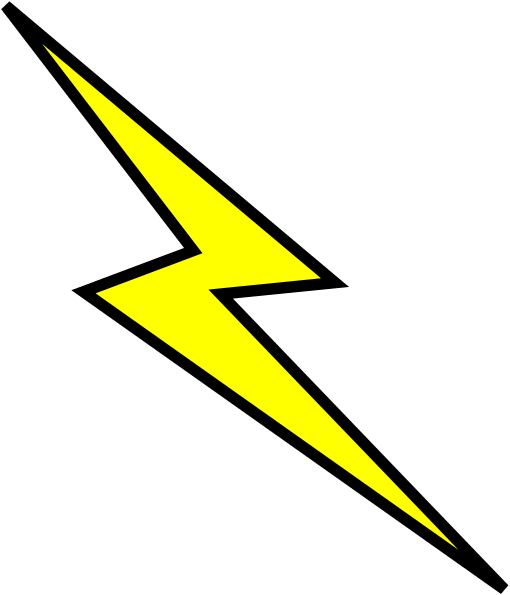
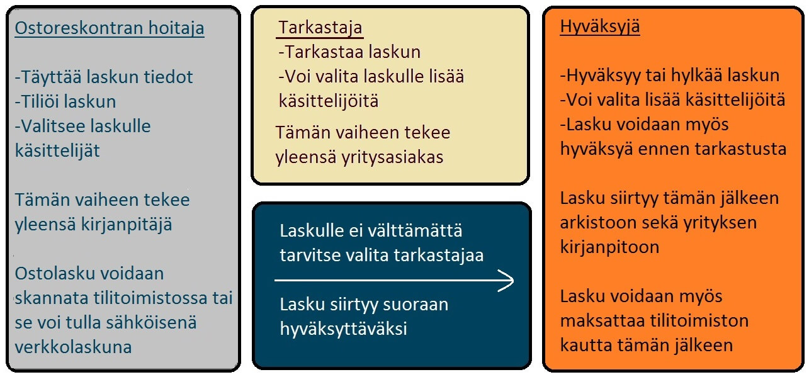
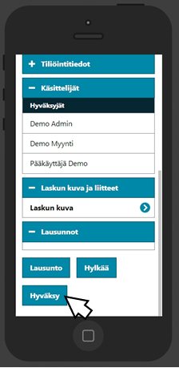

Mikä sähköinen taloushallinto?
MaestroNG on kokonaisjärjestelmä, joka automatisoi liiketoimintaprosesseja ja säästää aikaa sekä kustannuksia. Se on ohjelmiston osista koostuva palvelu, joka kasvaa saumattomaksi kokonaisuudeksi. Se laajenee tarpeen mukaan kattamaan kaikki yrityksen toiminnot. Kaikki käyttävät samaa kokonaisjärjestelmää, jossa tarvittavat tiedot syötetään vain kerran ja sen jälkeen ne päivittyvät automaattisesti kaikkialle. Samalla tiedot ovat aina oikein, virheet vähenevät ja kukaan ei käytä aikaa päällekkäisten töiden tekemiseen.

Miksi Maestro Taloushallinto?
- Markkinoiden kattavin kokonaisuus, Maestron omaa tuotantoa
- Täydellinen integraatio Maestron toiminnanohjausjärjestelmän muihin osiin
- KERTAKIRJAUS
- Tietojen ja raportoinnin ajantasaisuus
- Konesalipalvelun kautta käyttö ajasta ja paikasta riippumatta netin yli
-
Sähköiset ominaisuudet takaavat aidon paperittomuuden:
- Sähköiset myynti- ja ostolaskut
- Ostolaskujen sähköinen kierrätys
- Sähköinen työpöytä
- Sähköinen arkisto
- Sähköiset viranomaisyhteydet
- Jatkuva tuotekehitys vie ohjelmistoa kohti täyttä selainkäyttöisyyttä, minkä lisäksi ohjelmaan tulee jatkuvasti uusia ominaisuuksia
Ostolaskujen hyväksyntäprosessi
Mitä se tarkoittaa käytännössä
Sähköistämällä kirjanpitosi, luovut samalla rutiininomaisesta ja vanhanaikaisesta kuittien
sekä paperien pyörittelystä.
Siirtymällä taloushallinnon nykyaikaan voit saada kirjanpidostasi reaaliaikaista hyötyä, jota voit hyödyntää
budjetoinnissa sekä taloustilanteen analysoinnissa. Pysyt samalla itse kärryillä yrityksesi tilanteesta
ja osto- sekä myyntilaskujen liikkeistä.

Sähköisen ostolaskujen hyväksynnän voit tehdä myös puhelimesi avulla, jossa on pääsy internetselaimeen.
Saat halutessasi ilmoituksen sähköpostiisi, kun uusia laskuja on hyväksyttävänä tai voit käydä hoitamassa
laskut kun se parhaiten sopii.
Myyntilaskujen luonti onnistuu kätevästi kirjanpitäjän tuottamana tai yritys voi itse tehdä myyntilaskunsa käyttämällä
samaa ohjelmistoa kirjanpitäjän kanssa. Näin myyntilaskuja ei tarvitse erikseen toimittaa tilitoimistolle, eikä yrityksen
tarvitse erikseen ylläpitää omaa myyntireskontaa.
Yritys näkee helposti ohjelmistosta valitsemansa ajankohdan maksamattomat myyntilaskut, tai valitsee tehdyt laskut jotka
haluaa siirtää kirjanpitoon valmiina.